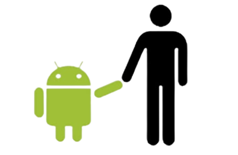

História do mascote do Android
Provavelmente você sabe que o sistema operacional Android, mantido pelo Google é um dos mais utilizados para dispositivos móveis em todo o mundo. Mas talvez você não saiba que o seu simpático mascote tem um nome e uma história muita curiosa? Pois acompanhe esse artigo para aprender muita coisa sobre esse robozinho
A Primeira versão
A primeira tentativa de criar um mascote surgiu em 2007 e veio de um desenvolvedor chamado Dan Morrill🖇. Ele conta que abriu o Inkscape🖇 (software livre para vetorização de imagens) e criou sua própria versçao de robô. o objetivo era apenas personificar o sistema apenas para a sua equipe, nçao existia nenhuma solicitação da empresa para a criação de um mascote.

Essa primeira versão bizarra até foi batizade em homenagem ao seu criador: seriam os Dandroids
Surge um novo mascote
A ideia de ter um mascote foi amadurecendo e a missçao foi passada para uma profissional da área. A ilustradora Russa Irina Block🖇, também funcionário do Google, ficou com a missçao de representar o pequeno rôbo de uma maneira mais agradável.
A ideia principal da Irina era representar tudo graficamente com poucos traços e de forma mais chapada. o desenho também deveria gerar identificação rápida com quem o olha. Surgiu então o Bugdroid, o novo mascote do Android

A principal inspiração para os traços do novo Bugdroid veio daqueles bonequinhos que ilustram portas de banheiro para indicar o gênero de cada porta. Conta a lenda que a artista estava criando em sua mesa no escritório do Google e olhou para o lado dos banheiros e a identificação foi imediata: simples, limpo, objetivo.
Então é isso! Espero que você tenha gostado do nosso artigo com essa curiosidade sobre o sistema Android e seu simpático mascote.